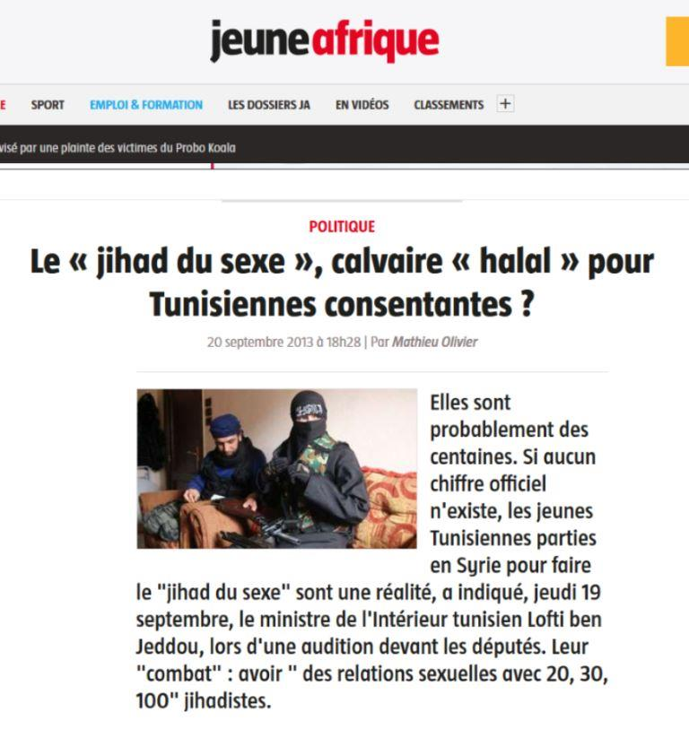
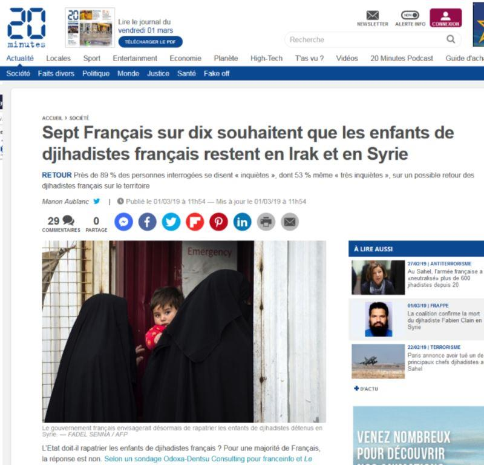

Alors que l’Irak a annoncé ce lundi 26 janvier que 13 « Français », membres présumés de l’EI capturés en Syrie, seraient transférés en Irak et jugés sur place, c’est dans la cacophonie des discours et sans avoir pu anticiper quoi que ce soit, que l’on tente de minimiser le problème en parlant d’exfiltration vers la France des jihadistes retenus, comme si nous leur devions protection.
Les Kurdes, lâchés par les Américains et leurs alliés, qui ont mené les plus durs des combats terrestres contre l’État islamique, relâchent leurs prisonniers en réaction au retrait américain : « vous ne nous protégez plus, nous n'avons donc plus les moyens de garder vos jihadistes, débrouillez-vous, on les relâche »...
Exécution de prisonniers par DAESH
Dans la précipitation, l’hypothèse d’une opération internationale reposant sur un accord entre alliés afin d’organiser une sorte de pont aérien sous le « haut patronage américain » permettant l’évacuation des jihadistes étrangers de Syrie est étudiée.
À ce propos, et comme d’habitude, la question de notre libre-choix se pose. Les discours contradictoires de nos ministres traduisent pour le moins, une improvisation coupable et un défaut d’anticipation.
Les chiffres des personnes qui seraient concernées sont d’ailleurs peu précis. On parle de 232 « revenants ». Ils sont en réalité beaucoup plus nombreux. La dialectique est savoureuse, ceux qui reviennent seraient donc partis avec l’espoir d’un retour ou bien ne seraient-ils que des ectoplasmes effrayants ?
Cela traduit aussi probablement notre incapacité à nommer ces hommes et ces femmes, complices d’assassins ou assassins eux-mêmes, Français de souche ou pas, mais tous coupables de trahison, tous combattants perdus d’un Islam dévoyé, fait de violences et de crimes.
Mais il est probable que la tentation de les désigner comme victimes ne soit lentement distillée dans les cerveaux reptiliens de nos jeunes, nourris au lait de la bien-pensance et de la « bisounourserie ». On leur trouvera bien quelques défenseurs des droits de l’homme, donneurs de leçons, pour les désigner comme jihadistes à l’insu de leur plein gré, quelques avocats (1) pour suggérer aux femmes de justifier leur présence pour des raisons humanitaires ou d’épousailles et pour estimer que des français doivent être jugés par des juges français en France (l’argument est recevable mais le piège grossier).
Émilie König, cette française qui a rejoint Daesh en Syrie
Enfin, la cohorte des idiots utiles excusera leur choix. Pourtant, concernant les femmes, chacun sait que la féminisation du jihad constitue un phénomène social depuis la création de Daesh ; leur complicité est choisie, active, historique, inexcusable, sans oublier le jihad al-nikah, qui consiste à satisfaire les besoins sexuels des guerriers à la faveur d’une multiplication de mariages « temporaires » (2).
Quant aux enfants (jusqu’à quel âge ?), le drapeau de leur innocence servira par ricochet aux mères et la boucle sera bouclée.
Elles, qui touchaient déjà là-bas, avec la complicité de certaines familles, leurs RMI payés par nos impôts alors qu’elles « servaient » dans tous les sens du terme la cause de leur maris successifs. Dès leur retour, elles continueront à percevoir leurs aides sociales et seront logées dans des appartements que nous ne manquerons pas de leur offrir après avoir purgé une peine de principe.
Notre générosité imbécile n’a pas de borne lorsqu’il s’agit de se flageller et de nourrir la haine envers ce que nous sommes et nos propres valeurs…
Mais en réalité combien d'hommes, de femmes et d'enfants sont concernés ? Quatre ministères (Intérieur, Justice, Affaires étrangères et Armées) sont impliqués par ces retours, pour une fourchette qui va de 100 à 300 personnes, sans détail d'âge ou de sexe. Aucun des ministères n’est capable de donner des chiffres précis, aucun ministère n’est capable de dire quel serait son rôle, ni le ministère de l’intérieur ni celui de la justice ne sait comment et où seront répartis les femmes et les enfants et sous quel motif d’inculpation ils seront poursuivis.
Faute de preuves, leur peine risque d’être légère voire inexistante.
Alors, combien parmi ceux-ci, malgré les tentatives de déradicalisation, à grand renfort d’aides diverses et couteuses, seront les nouveaux colporteurs de leurs discours de haine ? combien seront les embryons de nos futurs bourreaux ? parmi les 65 % des musulmans de religion ou de culture qui se déclarent favorables au port du voile, et 24 % au principe du port du voile intégral, (2) et surtout les 28 % qui ont adopté un système de valeurs clairement opposé aux valeurs de la République » et qui prônent la charia, il y aura forcément des oreilles attentives.
Certains dénonceront une forme d’amalgame de ma part, mais quels sont leurs arguments, sinon une forme de complaisance ? Les faits sont têtus, aucun membre d’aucune autre religion se référant à celle-ci, ne tue, n’assassine, ne viole, ne réduit les femmes en esclavage au nom de leur Dieu. Tant qu’il nous reste encore la liberté de le faire (3) rien ne s’oppose à ce que l’on se pose ces questions. Il faut échapper à la rhétorique islamophobe qui consiste à condamner les défenseurs de la liberté des femmes et de la laïcité, sous prétexte qu’ils seraient porteurs de racisme antimusulmans. Il faut libérer la parole pour éviter les extrémismes.
Ces gens-là, il ne faut pas les rapatrier, mais les laisser juger par le pays dans lequel ils ont commis leurs méfaits, la Syrie en est un, l’Irak l’est tout autant, car beaucoup ont combattu en Irak avant de rejoindre la Syrie.
Puisque nous sommes incapables d’être cohérents pour nous défendre, essayons au moins de ne pas nous ridiculiser en abandonnant les Kurdes pour les livrer à la vengeance séculaire des Turcs. La solution qui consisterait à aider les Kurdes à résister aux Turcs n’est même pas envisagée. Courage, fuyons !
Il est utile de relire ce qu’en disait en 1959, Éric Rouleau, journaliste et ancien ambassadeur de France. « Le Kurdistan, réparti depuis la fin de la première guerre mondiale entre quatre États, la Turquie, la Syrie, l’Irak et l’Iran, est en effet situé dans une région-clé pour l’Occident. Des troubles en Turquie ou en Iran menaceraient l’alliance atlantique, le pacte de Bagdad, et d’une manière générale ce qui reste du dispositif militaire érigé sur les frontières méridionales de l’U.R.S.S. Un soulèvement kurde en Syrie, ce qui n’est pas exclu, étant donné leur hostilité au nassérisme, aurait d’autre part des conséquences décisives sur le rapport des forces dans le monde arabe. Les Kurdes enfin, sont installés sur un territoire riche en pétrole, aussi bien en Turquie qu’en Iran et en Irak. L’agitation nationaliste pourrait rejoindre celle des communistes dans les agglomérations ouvrières, et l’approvisionnement de l’Occident en naphte serait alors fortement compromis ». Cette situation après la chute de l’URSS est sensiblement la même, mais la Russie n’est pas l’URSS, elle a tiré les enseignements de l’histoire, ce que nous sommes incapables de faire.
C’est ainsi qu’une guerre peut en cacher une autre, tout comme la lâcheté peut cacher l’incompétence et renforcer l’une par l’autre. Dans cet épisode de fin de bataille contre l’armée islamique, nous sommes loin d’avoir gagné la guerre. Le rapatriement des jihadistes est la conséquence de notre faiblesse, un non-choix que nous sommes bien incapables de gérer.
À entendre Castaner et Nicole Belloubet, la seule réponse serait donc celle du traitement judiciaire de ces jihadistes dès leur retour, mais à quoi cela servira-t-il ? Qui peut donc croire en leur repentance ? En quoi ces gens qui ont brulé leur passeport français, qui refusent de se soumettre à une quelconque autorité hormis celle de l’Islam et de la charia, mériteraient-ils à être entretenus pas nos impôts. Ils se veulent apatrides, qu’on leur donne donc ce statut et qu’ils aillent en enfer.
Alors que la France est dans une crise profonde, que nos soldats se battent au Levant, nous possédons la rare capacité à continuer à faire semblant d’être vainqueur jusqu’au jour où nous serons confrontés aux problèmes de gérer un conflit au sein même de notre territoire.
Alors les haines croisées succèderont à la lâcheté ordinaire.
R.P.
Pour info : un livre bientôt à paraitre sur ce thème : Piège au Levant par votre serviteur. Je vous en informerais le moment venu.
Notes :
1. Samia Maktouf avocate d’orphelins des jihadistes.
Partager cette page